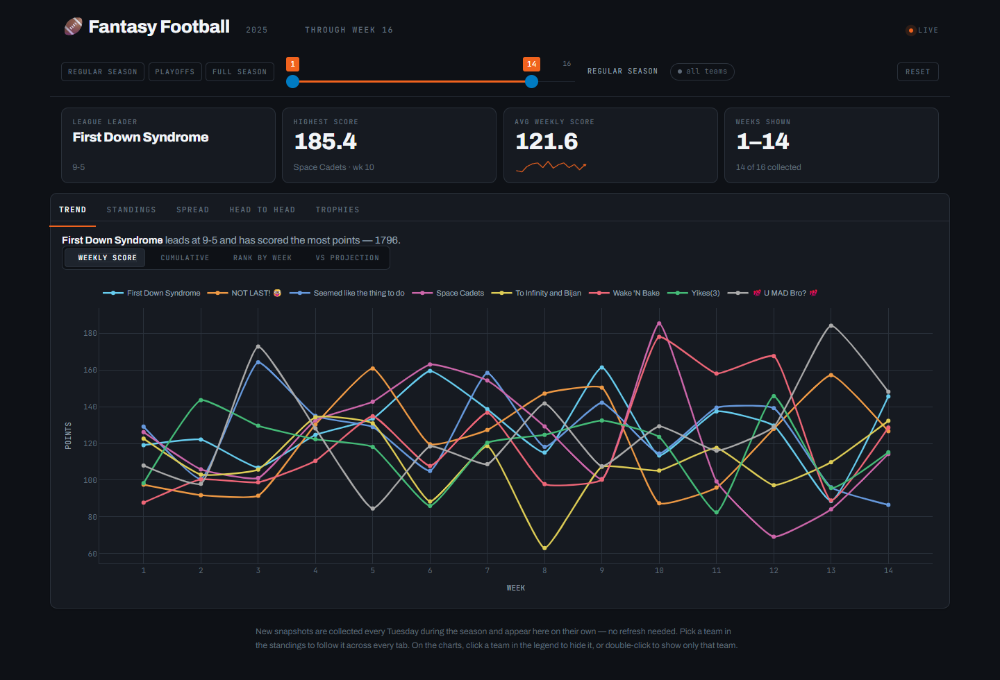
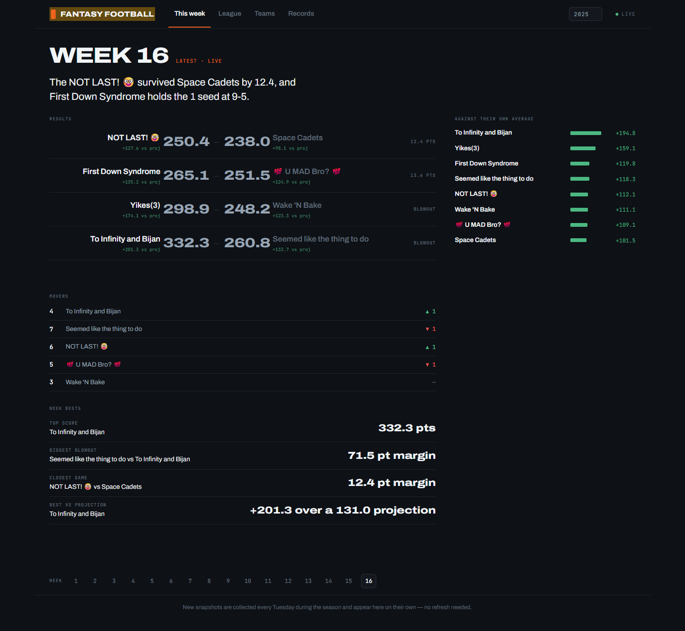
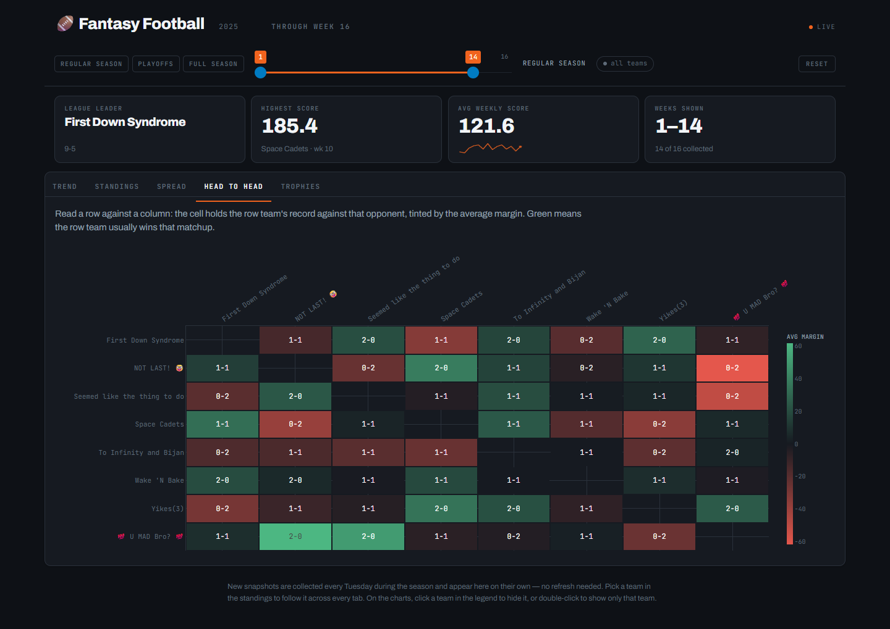
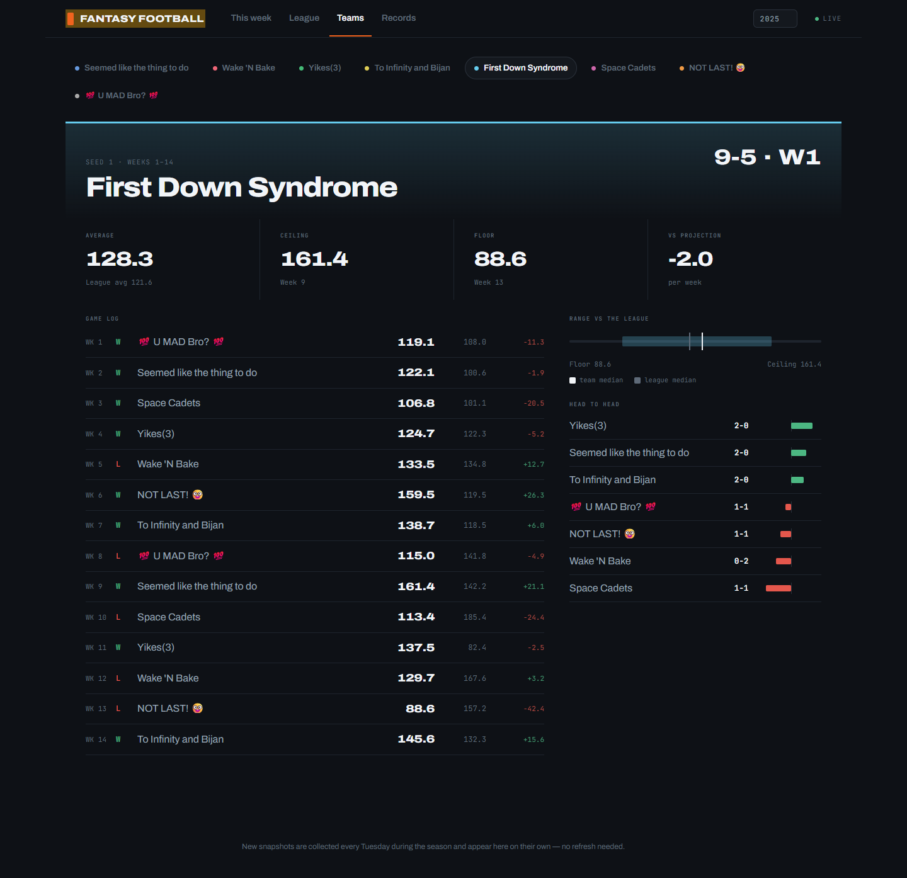
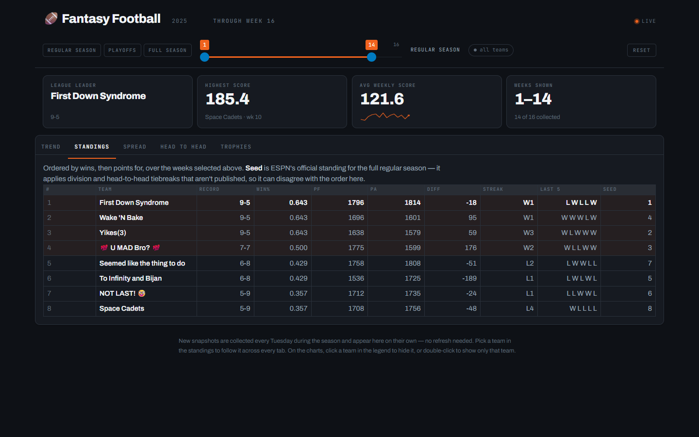
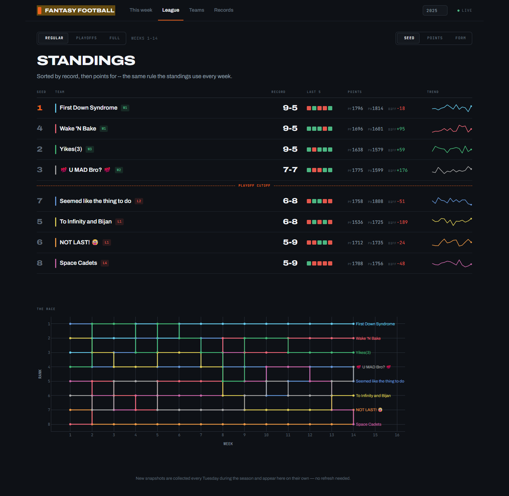
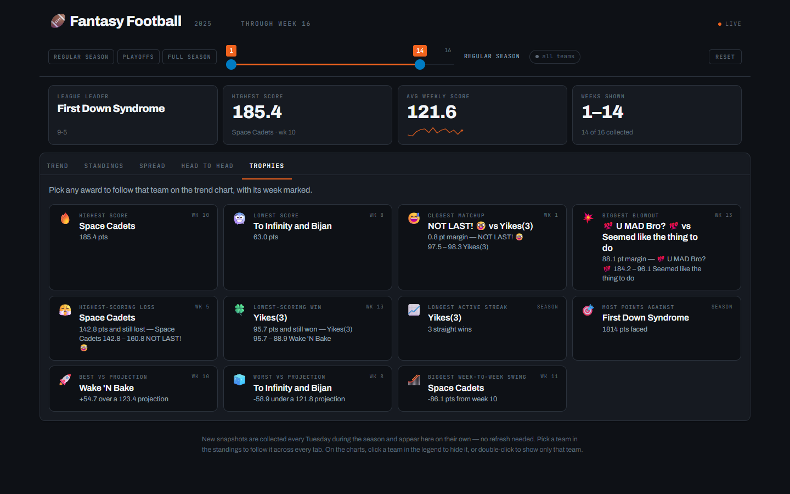
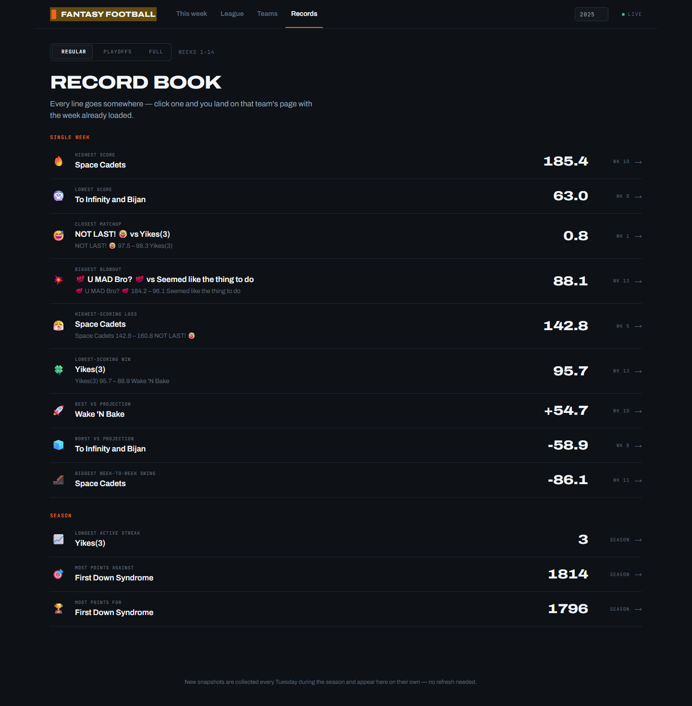
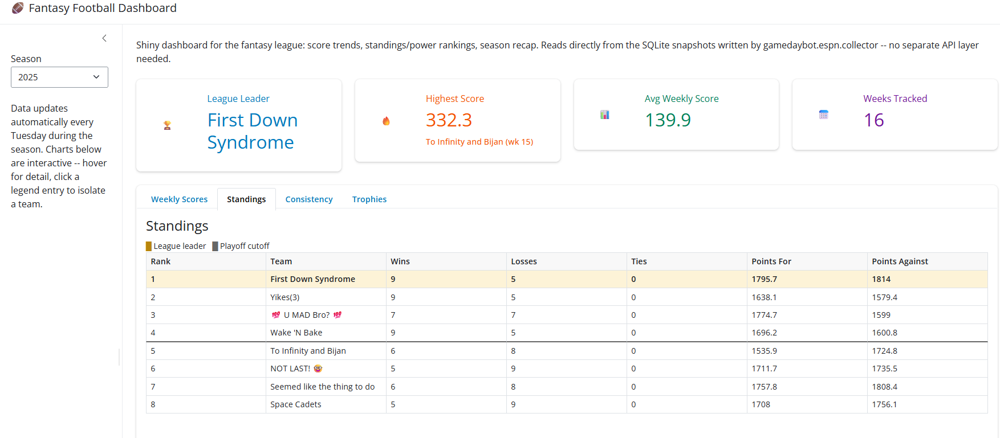

flowchart LR ESPN["ESPN API"] --> Bot["fantasy-bot container"] Bot --> Hook["Discord webhook"] Bot --> Slash["Slash-command bot"] Bot --> DB["SQLite in data/"] DB --> Dash["Shiny dashboard :8000"] Dash --> Tunnel["Cloudflare Tunnel"]
ESPN fantasy football
League updates in Discord. The season on a dashboard.
One Docker container posts ESPN reports on a schedule, answers slash commands, and serves a web dashboard of league history.
Channel
Scheduled posts
Reports land in the Discord channel that owns the webhook. Jobs run only between START_DATE and END_DATE.
On demand
Slash commands
If DISCORD_BOT_TOKEN is set, anyone in the server can ask for the current week. The bot syncs its command tree when it connects.
The season
Web dashboard
A Tuesday snapshot writes the finished week to SQLite. The dashboard charts every season stored in that file.
A typical week
The scheduler follows the NFL game clock for some jobs. Those times stay on Eastern. All other times follow TIMEZONE.
Mon
9:00 AM
Score update
6:30 PM ET
Close scores
Tue
6:00 AM ET
Dashboard snapshot
9:00 AM
Finals and trophies
6:30 PM
Power rankings
Wed
9:00 AM
Standings
9:01 AM
Waiver report
Thu
7:30 PM ET
Matchups
Fri
9:00 AM
Score update
Sun
9:00 AM
Injury monitor
4:00 / 8:00 PM ET
Score updates
Set DAILY_WAIVER to True to post the waiver report every day at 9:01 AM, not only Wednesday. The Tuesday snapshot waits until Monday night football is final. A trade check also runs every hour, every day: each trade is announced once, within the hour it clears.
Slash commands
Slash commands need DISCORD_BOT_TOKEN. If ESPN returns an error, the bot explains that the season may not have started yet.
| Command | Returns |
|---|---|
/matchups |
The current week’s matchups. |
/scoreboard |
The current scoreboard. |
/standings |
The current standings. |
/power-rankings |
The current power rankings. |
/monitor |
The injury and player monitor report. |
/trophies |
This week’s trophies. |
/waiver-report |
Recent waiver moves. Private leagues only. |
/dashboard |
A link to the web dashboard. |
Dashboard
The dashboard reads data/fantasy.db. It does not call ESPN on its own. It opens on This week, the latest collected week for the season. League and Records carry a scope segment — Regular, Playoffs, or Full — that sets which weeks are in play. The regular-season boundary comes from the data. A team’s wins plus losses plus ties is how many games it has played.
This week
Results ordered closest-first, who moved in the standings, the week’s bests, and every team against its own average. Nothing to configure.
League
The standings board — record, streak, last-five form, points for/against, and a sparkline per row — sortable by seed, points, or recent form. Below it, the head-to-head grid, the season’s trade ledger, and “the race”: rank by week for every team on one chart.
Teams
One page per team: a game log, range vs the league (floor, ceiling, and median next to the league’s), and every head-to-head matchup for that team, sorted by average margin.
Records
The record book. Twelve season awards, each a row with its scoreline and week, that links straight to the team it belongs to.
Selecting a team — a standings row, a matchup, a record-book row, or the team picker itself — takes you to that team’s own page rather than filtering a shared chart. The dashboard has no reset button because there is nothing left to un-filter: each destination shows the whole league, or one team, never a muted version of either.
A dropdown in the masthead selects the season. Only seasons in the database appear there. The page polls the database every 30 seconds, so a new snapshot reaches an open tab on its own, advancing This week’s default view along with it.
Reach the dashboard at http://localhost:8000 locally, or at https://fantasy.ethandbard.com/.
Before and after
The dashboard has gone through three shapes. The first version proved the idea — one SQLite file, four stat boxes, four tabs, Bootstrap defaults. It grew into a five-tab dark build with a shared week-range slider. The redesign below restructures that build into four destinations, without changing a single number underneath it.

Before — Trend

After — This week

Before — Head to head

After — Teams

Before — Standings

After — League

Before — Trophies

After — Records
The very first version, for scale:

How it runs
The entrypoint gamedaybot/run.py starts three parts in one process:
- A scheduler posts recurring reports to a Discord webhook.
- A Discord gateway bot answers slash commands, if
DISCORD_BOT_TOKENis set. - A Shiny dashboard on port
8000, backed by SQLite indata/.
A Cloudflare tunnel publishes the dashboard. On the VPS that is the shared connector on the edge network. Off the VPS it is an optional cloudflared sidecar with its own tunnel credentials. DASHBOARD_URL in config.env is the link /dashboard returns.
Secrets stay in config.env. Docker Compose loads them through env_file, so no secret is baked into the image.
Where the code lives
| Path | Role |
|---|---|
gamedaybot/run.py |
Container entrypoint. |
gamedaybot/espn/ |
ESPN access, report text, and the scheduler. |
gamedaybot/discord_bot/ |
Slash commands, webhook client, and embeds. |
gamedaybot/storage/db.py |
SQLite schema and queries. |
gamedaybot/web/ |
Dashboard layout, season math, and charts. |
dev/ |
API health check and season backfill. |
tests/ |
Tests for web/stats.py. |
docs/ |
This overview, the slide deck, and the docs Worker. |
The README covers configuration, Docker setup, tunnel setup, and troubleshooting. This page is the public overview. The slide deck is a shorter walkthrough of the same three parts.
Preview and publish this site
The overview and slides are a Quarto website in docs/.
Preview:
quarto preview docsRender:
quarto render docsOutput lands in docs/_site. Two public URLs serve that folder:
| URL | How it is served |
|---|---|
| https://ethandbard.github.io/fantasy-football/ | GitHub Pages, from the gh-pages branch |
| https://fantasy-docs.ethandbard.com/ | A Cloudflare Worker that fetches the GitHub Pages copy |
Push to main to publish content. The workflow in .github/workflows/quarto-publish.yml renders docs/ and deploys docs/_site to gh-pages. GitHub Pages serves that branch. The Worker at the custom hostname fetches the same GitHub Pages site. Both URLs then show the new render.
The Worker script is proxy-worker.js in this directory. Redeploy it only when that file changes:
cd docs
npx wrangler deployA change to the Quarto pages does not need wrangler deploy. Push to main is enough.
Do not run a second copy of the bot stack on another host at the same time. Two schedulers post every report twice. The docs site has no such limit: it is static files only.